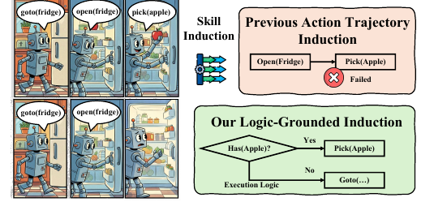
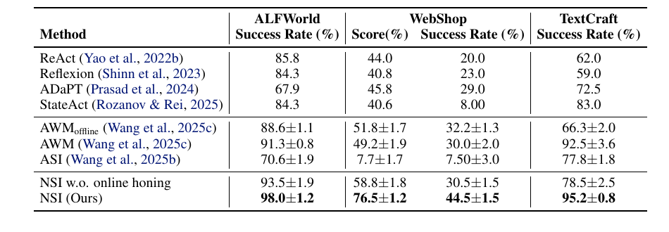
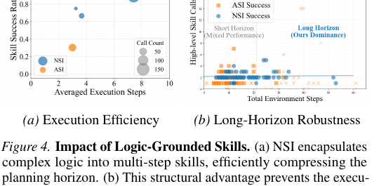
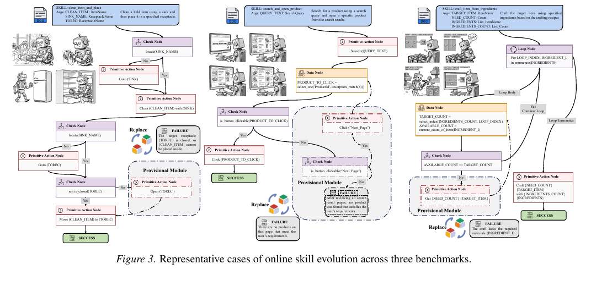

Foundation model-driven agents often struggle with long-horizon planning because purely prompting-based reasoning is transient. Existing skill induction methods distill experience into state-blind parameterized scripts, but they fail to capture the conditional logic needed for robust execution in dynamic environments. Neuro-Symbolic Skill Induction (NSI) lifts interaction traces into modular, logic-grounded programs. By synthesizing explicit control flow and dynamic variable binding, NSI lets agents discover when and why to act, induce skills from few-shot examples, and flexibly adapt to unseen goals.
NSI redefines agent skills as modular programs whose actions are governed by explicit symbolic predicates. Rather than replaying a linear action script, each skill has neural grounding for state tracking and a symbolic execution graph for control, data binding, primitive actions, and terminal feedback.
Map observations into first-order predicates so execution can reason over entities, relations, and grounded state changes.
Invent branching, crossover, lifting, and loop-folding modules that turn local traces into reusable control structures.
Use runtime feedback to revise feasibility conditions and graft recovery branches onto existing skill graphs.

Linear skills encode what happened in a successful trajectory. NSI instead lifts traces into workflows that make the hidden execution logic explicit, such as checking whether the target object exists before picking it and branching when the environment differs from the demonstration.
This representation closes the gap between text-only experience reuse and executable programs: skills are readable by language models, but their behavior is controlled by state-aware symbolic structure.
NSI is evaluated on ALFWorld, WebShop, and TextCraft, covering embodied household tasks, web shopping, and recursive crafting. Across these long-horizon domains, NSI improves over prompting agents, reflection-based agents, workflow memory, and prior programmatic skill induction baselines.

NSI achieves the highest reported performance across ALFWorld, WebShop reward and success rate, and TextCraft.
Success rate on ALFWorld, compared with 93.5% for NSI without online honing.
Success rate on WebShop, improving over the strongest reported non-NSI baseline.
Success rate on TextCraft, showing robust compositional generalization.

Logic-grounded skills compress long action sequences into reusable macro-executions while preserving conditional checks, which helps avoid long-horizon collapse.
During deployment, runtime failures expose missing logic rather than forcing the agent to discard the whole skill. Reflective planning generates a local recovery trajectory, and NSI synthesizes it into a new subgraph attached to the failure node. The skill grows from a linear chain into a branching, repairable program.

@inproceedings{shao2026liftingtraces,
title={Lifting Traces to Logic: Programmatic Skill Induction with Neuro-Symbolic Learning for Long-Horizon Agentic Tasks},
author={Jie-Jing Shao and Haiyan Yin and Yueming Lyu and Xingrui Yu and Lan-Zhe Guo and Ivor W. Tsang and James T. Kwok and Yu-Feng Li},
booktitle={Proceedings of the 43rd International Conference on Machine Learning},
year={2026},
url={https://arxiv.org/abs/2605.01293}
}